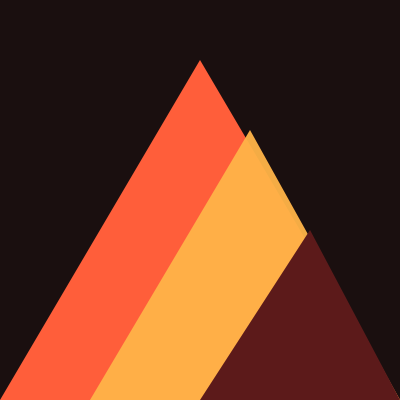

Jam
1
Jam attiva
3 persone · cifrata end to end

In riproduzione per tutti
Sale e Vento
Lena Marchetti
2ConnessoConnessoConnesso
Partecipanti
Emanuele (tu)
HostGiulia
OspiteMarco
Ospite1440×900 dp. Jam, Equalizzatore, Onboarding, Import, Pulizia, Registro attività, scorciatoie e tray: stessa colonna, stessi margini, stati dichiarati.
Indice dei mockup

screens/equalizer/, non catturata): preset come blocchi grandi, bande piccole in 920 px centrati, margini diversi dalle altre pagine (F-106).screens/onboarding/): colonna da telefono centrata in una finestra da 1440 px, con barra laterale e player vuoti ai lati.FreeKmusic legge i file dove sono: non li sposta e non li copia.



Nessuna connessione: il download riprende da solo appena la rete torna. Il file parziale resta nella cartella dei download.